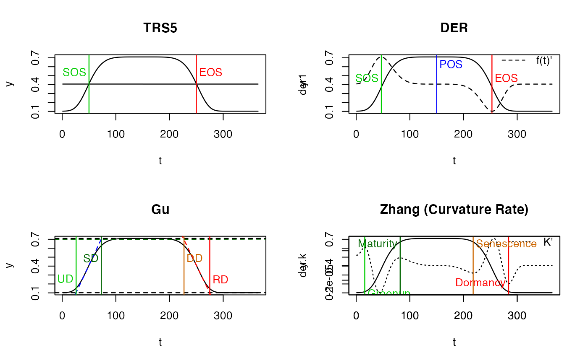

PhenoTrs Threshold method
PhenoDeriv Derivative method
PhenoGu Gu method
PhenoKl Inflection method
PhenoTrs( fFIT, t = NULL, approach = c("White", "Trs"), trs = 0.5, asymmetric = TRUE, IsPlot = TRUE, ... ) PhenoDeriv( fFIT, t = NULL, analytical = TRUE, smoothed.spline = FALSE, IsPlot = TRUE, show.lgd = TRUE, ... ) PhenoGu( fFIT, t = NULL, analytical = TRUE, smoothed.spline = FALSE, IsPlot = TRUE, ... ) PhenoKl( fFIT, t = NULL, analytical = TRUE, smoothed.spline = FALSE, IsPlot = TRUE, show.lgd = TRUE, ... )
| fFIT |
|
|---|---|
| t |
|
| approach | to be used to calculate phenology metrics. 'White' (White et al. 1997) or 'Trs' for simple threshold. |
| trs | threshold to be used for approach "Trs", in (0, 1). |
| asymmetric | If true, background value in spring season and autumn season is regarded as different. |
| IsPlot | whether to plot? |
| ... | other parameters to PhenoPlot |
| analytical | If true, |
| smoothed.spline | Whether apply |
| show.lgd | whether show figure lelend? |
library(phenofit) # simulate vegetation time-series fFUN = doubleLog.Beck par = c( mn = 0.1 , mx = 0.7 , sos = 50 , rsp = 0.1 , eos = 250, rau = 0.1) t <- seq(1, 365, 8) tout <- seq(1, 365, 1) y <- fFUN(par, t) methods <- c("AG", "Beck", "Elmore", "Gu", "Zhang") # "Klos" too slow fFITs <- curvefit(y, t, tout, methods) fFIT <- fFITs$model$AG par(mfrow = c(2, 2)) PhenoTrs(fFIT)#> sos eos #> 50 250PhenoDeriv(fFIT)#> sos pos eos #> 47 150 253PhenoGu(fFIT)#> UD SD DD RD #> 26 73 227 275PhenoKl(fFIT)#> Greenup Maturity Senescence Dormancy #> 16 82 218 284